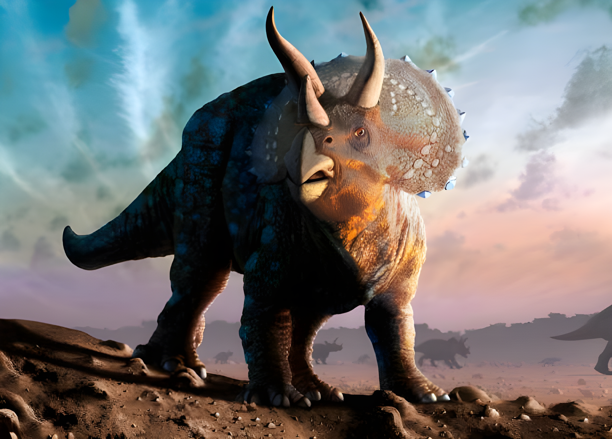
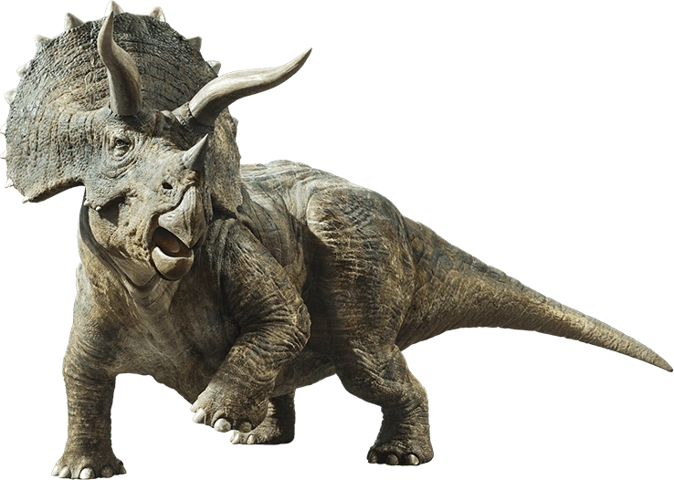

Triceratops
Tam giác long kỷ Phấn trắng
Tổng quan
Kỷ
Cretaceous
Họ
Ceratopsidae
Chi
Triceratops
Dài
8.5 m
Cao
3 m
Nặng
9 tấn
Thức ăn

Triceratops hay được gọi là khủng long ba sừng hay tam giác long là một chi khủng long ăn cỏ thuộc họ Ceratopsidae, sống vào thời kỳ cuối kỷ Phấn Trắng ở Bắc Mỹ ngày nay.
Nguồn: wikipedia.org
Phân bố
Khu vực Bắc Mỹ
Thông tin thêm về Triceratops
Kỷ nguyên và phân bố
Có rất nhiều hóa thạch Triceratops được tìm thấy trong các lớp trầm tích Creta cao nhất ở phía tây Bắc Mỹ . Khoa học đã phát hiện mẫu vật của loài khủng long này ở Colorado, Montana, Wyoming, South Dakota và một số tỉnh của Canada, chứng tỏ chúng sống ở Bắc Mỹ. Loài khủng long này sống ở kỷ Maastrichtian, là một phần của Kỷ Phấn trắng, kéo dài từ 145 triệu năm trước đến 66 triệu năm trước.
Triceratops là một trong những loài khủng long sống trên cạn lớn nhất được phục hồi phổ biến nhất trong các trầm tích kỷ Phấn trắng cao nhất ở phía tây Bắc Mỹ và phần còn lại của nó đã được tìm thấy trên khắp khu vực. Mặc dù nhiều loài khủng long sừng lớn khác đã được phát hiện trong các lớp xương khổng lồ đại diện cho nhiều cá thể, Triceratops hiếm khi được tìm thấy trong các nhóm từ ba cá thể trở lên.
Tên khoa học
Được đặt tên bởi nhà cổ sinh vật học người Mỹ OC Marsh năm 1889, tên Triceratops, nghĩa đen là "mặt ba sừng", xuất phát từ tiếng Hy Lạp cổ đại τρί- (tri-) nghĩa là "ba", κέρας (kéras) nghĩa là "sừng", và ὤψ (ops) nghĩa là "mặt".
Kích thước
Lớn: Cá thể Triceratops được ước tính đạt chiều dài khoảng 7,9 tới 9 m (26.0-29.5 ft), chiều cao từ 2,9 tới 3,0 m (9.5-9.8 ft), nặng 6,1-12,0 tấn (13,000-26,000 lb). Tương đương với một chiếc xe buýt

Ngoại hình
Triceratops sở hữu một hộp sọ khổng lồ, và một số cá thể có hộp sọ dài gần 3 mét (khoảng 10 feet), khiến chúng trở thành một trong những loài động vật trên cạn lớn nhất. Chúng có cấu tạo gần giống một con tê giác, với chiếc cổ thõng xuống, chiếc mỏ giống vẹt, một chiếc sừng đơn nằm ngay trên lỗ mũi, và một cặp sừng dài khoảng 1 m (3.3 ft), nằm phía trên mắt. Sau hộp sọ có một diềm xương cổ và phần rìa có gai nhọn.
Lớp da Triceratops bất thường so với các khủng long khác. Dấu vết da của một mẫu vật chưa miêu tả cho thấy da của chúng có những cấu trúc giống lông cứng, gần giống với chi Ceratopsia nguyên thủy Psittacosaurus.
Chức năng của diềm cổ
Diềm của Triceratops có thể đã giúp bảo vệ cổ của nó, nhưng một số mẫu vật cho thấy vết cắn của Khủng long bạo chúa làm thủng diềm, vì vậy nó không phải lúc nào cũng đủ. Các đường diềm cũng có thể được sử dụng để thu hút bạn tình, như một cách để các thành viên cùng loài nhận ra nhau.
Chế độ ăn
Triceratops sẽ ăn một chế độ ăn uống bao gồm chủ yếu là lá cây. Bạn có thể tự hỏi làm thế nào các nhà nghiên cứu biết những gì một loài động vật đã tuyệt chủng từng ăn. Chà, răng của khủng long giúp các nhà khoa học xác định loại thức ăn mà nó ăn. Loài khủng long này có răng dẹt, rất phù hợp để nghiền nát thực vật. Kết quả là, chúng tôi biết loài này là động vật ăn cỏ. Do vị trí đầu thấp so với cơ thể, các nhà nghiên cứu tin rằng những con khủng long này cũng ăn lá cây và thảm thực vật thấp so với mặt đất. Tuy nhiên, người ta cũng lưu ý rằng những con khủng long này có thể đã sử dụng thân hình to lớn và cặp sừng của chúng để hạ gục những cây lớn hơn.
Do đó, họ sẽ có thể ăn một chế độ ăn nhiều thực vật hơn nhờ đặc điểm này. Thực vật họ ăn có thể bao gồm cọ, dương xỉ, cây mè và các loài khác có sẵn vào thời điểm đó. Ngoài ra, một sự thật thú vị khác về Triceratops là chúng có những chiếc mỏ lớn và hẹp ở cuối hàm. Do đó, theo Hiệp hội Nghiên cứu Tiến hóa , thiết kế hàm và mỏ này được cho là giúp chúng dễ dàng nắm bắt và nhổ hơn là cắn.
Khám phá
Khi mẫu vật đầu tiên được phát hiện vào năm 1887, người ta đã nhầm nó với một loài bò rừng khổng lồ đã tuyệt chủng. Chỉ sau đó, những khám phá sâu hơn mới tiết lộ rằng nó thực sự là một con khủng long có sừng. Hiện tại có hai loài được công nhận là T. Horridus và T. Prorsus.
Sự tuyệt chủng
Triceratops là một trong những chi khủng long phi chim cuối cùng được biết tới, và đã tuyệt chủng vào Sự kiện tuyệt chủng kỷ Creta-Paleogen 66 triệu năm trước.